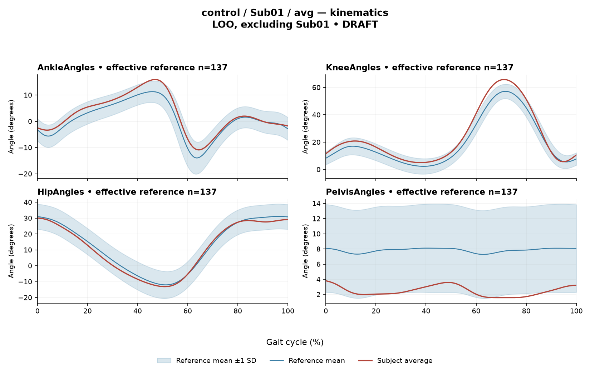

rater1 / Report 8 of 105 / Review spreadsheet row 9
R4AE3E3AA930A3633
Case: control_Sub01_avg
Read this report independently. Record judgments in the workbook. Browser pages do not save ratings.
Report: exact saved text
# Gait Report Interpretation — Sub01 **Interpretation version:** limited-evidence-v3.1-candidate **Scope:** Research-level descriptive interpretation of a supplied quantitative summary. This is not a diagnosis, and no treatment selection is addressed. --- ## 1. Objective Findings **Participant and group.** Sub01 is recorded in the control (healthy-cohort) group. Because this is a control participant, there is no paretic/non-paretic designation, and the affected-side field is not applicable. Group membership in a healthy cohort is a study-enrollment label; it does not by itself establish normal physiology, and nothing in this summary tests that. **Side.** No limb side is identified for the supplied EMG or kinematic channels. Per the release documentation, the healthy Excel release averages left- and right-side strides, so the analysis cycle here is an initial-contact-aligned pooled cycle rather than one named limb's observed event trace. The documentation also notes that healthy MAT aggregation and side-specific denominators were not numerically re-verified by the stroke audit; side attribution therefore cannot be made from this input. **Cycle definition.** Contributing strides run from initial contact of the stride-defining limb (0%) to its next initial contact (100%). This boundary is the only event anchor supplied, and it is documentary. All timing below is expressed as a percentage of the analysis cycle. **Supplied quantitative results.** - Composite kinematic deviation score (GPS-like, RMS of the sagittal Gait Variable Scores provided): **3.98** - Deviation reference actually used: **137 healthy subjects, leave-one-out (Sub01 excluded), 1001 phase points, source main_cohort_excel** - Sagittal ROM and GVS: Ankle 26.8°/2.39; Knee 60.8°/4.97; Hip 43.2°/1.90; Pelvis 2.2°/5.41 - EMG envelopes available for seven muscles: GAS, RF, VL, BF, ST, TA, ERS - CCI: TA-vs-GAS 0.40; RF-vs-BF 0.67 **Not supplied / not applicable in this input.** - Gait speed and cadence: **not provided**. Because speed is unknown, it cannot be confirmed that this participant falls inside the reference cohort's self-selected speed span (0.80–1.79 m/s), and no speed-matched comparison can be asserted. - Step-length symmetry index: **not applicable** — the index used in this task is defined on paretic/non-paretic sides and has no meaning for a control. This does not mean a general left/right step-length measure could not be defined elsewhere; it simply is not part of this task. - Individual toe-off, muscle-specific matched timing norms, intermediate event or phase boundaries, stride-level variability, raw-signal quality checks, and expert plots are **outside this input's visibility**. Age, sex and gait-event fields may exist in the release but are not supplied here; time post-stroke, stroke clinical scores and non-paretic-side designation are cohort-specific fields that do not apply to a control. None of these should be described as absent from the source dataset. - Only sagittal-plane kinematics are included; coronal and transverse channels are not part of this analysis. --- ## 2. EMG Envelope and Threshold Findings **How these numbers should be read.** All EMG results are properties of an **ensemble-averaged envelope**. For each muscle, normalization used a shared maximum across available strides before averaging, and this pipeline used the released mean curves without further amplitude normalization. Amplitudes are therefore **relative envelope values** — they are not neural drive, force, or strength, and muscles must not be ranked as stronger or weaker from them. An averaged curve also cannot show stride-to-stride variability, so none of the patterns below can be assumed to recur identically in every individual stride. Above-threshold intervals are regions where the averaged envelope exceeds **20% of that same curve's own peak**, with a minimum retained interval of 3% of the cycle. An interval written X%–Y% with X > Y wraps the 100%→0% boundary, i.e. the mean envelope remains above threshold continuously across the cycle-defining initial contact. "No interval detected" would mean only that no region met the threshold-plus-duration rule. These intervals are not physiological onsets, offsets, contraction durations, or evidence of inactivity outside the intervals. **Detected intervals and coverage (mean-envelope level):** | Muscle | Interval(s) | Coverage | Peak norm. amp. | Max abs. z (location) | |---|---|---|---|---| | GAS | 4%–56% | 52% | 0.66 | 4.9 above reference, at 53% | | RF | 84%–49% (wraps) | 65% | 0.53 | 1.3 below reference, at 67% | | VL | 87%–32% (wraps) | 48% | 0.58 | 2.3 above reference, at 17% | | BF | 82%–10% (wraps) | 27% | 0.59 | 1.4 above reference, at 96% | | ST | 70%–74%; 79%–48% (wraps) | 74% | 0.43 | 3.7 above reference, at 35% | | TA | 58%–79%; 84%–27% (wraps) | 65% | 0.57 | 2.0 above reference, at 19% | | ERS | 64%–62% (wraps) | 98% | 0.52 | 3.1 above reference, at 44% | **Descriptive observations.** - GAS is the only muscle whose retained interval does **not** cross the cycle boundary; its onset at 4% is close to, but not at, the initial-contact boundary of contributing strides. RF, VL, BF, ST, TA and ERS each show boundary continuity of the mean envelope across initial contact. - ST and TA each have two retained intervals, so the mean envelope for these muscles dropped below the 20% criterion for at least one segment long enough to separate them (ST between 74% and 79%; TA between 27% and 58%, and again between 79% and 84%). - ERS coverage is reported as 98% of the cycle with a single wrapping interval. This is a rounded value and does not establish that the ERS envelope had no below-threshold segment; a retained-interval list and a rounded coverage figure alone cannot settle that question. - The reported peak amplitudes span 0.43 (ST) to 0.66 (GAS) in relative envelope units. Because each curve is thresholded against its own peak, these values are not comparable across muscles as magnitudes of effort. - No supplied evidence identifies these intervals with any gait phase or phase-specific function. Because individual toe-off and matched muscle-specific timing references are not supplied, none of this timing can be called normal, early, delayed or prolonged, and no interval can be assigned to weight acceptance, clearance, push-off, loading response, mid-stance or pre-swing. Anatomical roles may of course be named descriptively (e.g. GAS as an ankle plantarflexor, TA as a dorsiflexor, RF/VL as knee extensors, BF/ST as knee flexors/hip extensors, ERS as a trunk extensor), but this summary does not link those actions to specific cycle percentages. **Max |z| values.** Max |z| is the **largest absolute standardized difference across all 1001 phase points**, comparing this curve with the healthy-cohort phase-specific mean and SD. It is an extreme-value statistic, not a single-observation z-score, and the conventional 2-SD rule must not be applied: in this dataset every one of 109 healthy controls exceeds |z| = 2 on at least one muscle, and per-muscle healthy 95th percentiles for this statistic run from 3.65 (ERS) to 4.61 (TA), higher still under leave-one-out. Accordingly: - VL (2.3), TA (2.0), RF (1.3) and BF (1.4) all fall below the lowest per-muscle 95th percentile in that stated span, so these values are unremarkable against the given reference framing. TA's 2.0 is well under its own supplied 95th percentile of 4.61. - ERS (3.1) is below its own supplied 95th percentile of 3.65. - ST (3.7) falls within the 3.65–4.61 span of per-muscle percentiles; the specific ST percentile is not supplied, so this value cannot be placed on either side of its own muscle's limit. - GAS (4.9) exceeds the upper end of the stated per-muscle 95th-percentile span (4.61), i.e. it is the largest standardized difference here. The location, 53% of the cycle, marks where the standardized difference is greatest — not necessarily where the envelope peaks and not any gait event. "Above reference" means above the phase-specific reference **mean** at that phase point, not above a healthy percentile limit. A large standardized difference in a control participant does not establish disease, abnormal physiology, or a measurement fault; it describes distance from an empirical cohort mean at one phase point, under this particular normalization and envelope pipeline. **Co-contraction indices.** CCI here is the Falconer–Winter index computed on the **full continuous normalized envelopes over the whole cycle** (2 × common area / summed areas). It is a whole-cycle overlap index: it is not simultaneous activation time, not muscular force, and not a phase-specific result, and it can be non-zero even when detected bursts do not overlap, because sub-threshold envelope area contributes. - **TA-vs-GAS = 0.40**, against the supplied healthy median of 0.39 (2.5th–97.5th pct 0.24–0.59): essentially at the median and within the interval. - **RF-vs-BF = 0.67**, against the supplied healthy median of 0.68 (0.48–0.83): just below the median and within the interval. Falling inside these intervals does **not** establish physiologically normal co-activation or normal muscle function, just as falling outside would not establish pathological co-activation, stiffness or impaired motor control. These values are tied to this dataset's normalization and envelope methods and must not be compared with CCI values or thresholds from other studies or algorithms. --- ## 3. Kinematic and Reference Comparisons All kinematic values are **sagittal plane only**; no coronal or transverse information is available, so any out-of-plane behaviour is simply not addressed. **Composite deviation.** The GPS-like composite is **3.98**, the RMS of the four supplied sagittal Gait Variable Scores. It is not the validated 9-variable GPS. Against the supplied healthy composite reference (median 5.1, 95th percentile 10.7), 3.98 lies below the median and well below the 95th percentile — i.e. this participant's summary difference from the reference is smaller than that of the typical reference subject. The comparison here is made against a **leave-one-out reference of 137 healthy subjects with Sub01 excluded**, which is the appropriate configuration for a cohort member; it avoids the participant contributing to their own comparison mean. Note, however, that the cohort pools both body sides and all ages and is not age- or speed-matched; with gait speed not provided for this participant, no speed-matched comparison can be asserted either way. **Per-joint values.** - Pelvis: ROM 2.2°, GVS 5.41 (highest GVS of the four channels) - Knee: ROM 60.8°, GVS 4.97 - Ankle: ROM 26.8°, GVS 2.39 - Hip: ROM 43.2°, GVS 1.90 (lowest GVS) No per-joint GVS reference values or confidence limits are supplied — only the composite reference. Therefore individual joint GVS values can be ranked relative to one another within this subject, but none of them can be classified as within or outside normal limits. The pelvis contributes the largest single GVS and the hip the smallest. **Interpretive limits on GVS/GPS-like.** These are summary magnitudes of difference from the stated reference across the cycle. They do **not** localize the direction of a waveform difference (greater or lesser flexion/extension), do not identify the phase at which the difference occurs, and do not decompose into a specific movement pattern. Sagittal pelvic ROM of 2.2° is a small absolute excursion, but ROM alone, without an appropriate matched comparison and without the plane-complete data, does not establish a clinical restriction — and the supplied material contains no per-joint ROM reference against which to judge it. **General comparability caveat (applies to this control as to any participant).** The reference cohort pools sides and ages and is not matched to this participant on age or walking speed, and this participant's speed is unknown. Differences from that reference are therefore descriptive distances from an empirical average, conflating whatever methodological, anthropometric, speed and individual-variation effects are present. No comparison in this report can establish a disease effect, a pathological mechanism, or a clinical diagnosis, and pooled calibration percentiles should not be treated as matched leave-one-out normal limits. --- ## 4. Questions for Further Clinical Assessment These are open questions raised by the supplied summary. None presupposes that a mechanism, impairment, or measurement problem has been observed; each asks whether one exists. 1. **Speed and cadence.** Are self-selected gait speed and cadence recorded for Sub01 in the release? Without them, comparability with the reference cohort's speed span cannot be checked, and speed-related effects on envelope shape and kinematics cannot be considered. 2. **Side and event data.** Can the limb side and individual gait events (notably toe-off) for the contributing strides be retrieved? These would be required before any interval could be discussed in phase terms rather than as cycle percentages. 3. **GAS standardized difference.** The largest standardized difference in this dataset is GAS (4.9 above the phase-specific reference mean at 53%). Is there any reason — electrode placement, cross-talk, envelope processing, an individual activation pattern, or normalization behaviour with this subject's shared-maximum scaling — that would warrant review of this channel? The summary alone cannot distinguish among these. 4. **ERS coverage.** ERS coverage is reported as 98% with a single wrapping interval. Would the underlying envelope confirm whether any below-threshold segment exists, and is a near-continuous above-threshold trunk-extensor envelope consistent with this laboratory's typical ERS recordings and electrode configuration? 5. **ST and TA segmentation.** ST and TA each produced two retained intervals. Is the inter-interval gap in each case robust to the 20%-of-own-peak threshold and 3%-of-cycle duration rule, or sensitive to those parameter choices? 6. **Pelvic sagittal excursion.** Sagittal pelvic ROM is 2.2° with the highest single GVS of the four joints. Are per-joint reference distributions, marker-set details, or coronal/transverse pelvic data available that would allow this channel to be evaluated rather than only described? 7. **Per-joint reference limits.** Can per-joint GVS reference values (matched as closely as feasible) be obtained, so that the ranking observed here can be assessed against a distribution rather than only internally? 8. **Stride-level data.** Are individual stride envelopes and stride counts retrievable? The averaged curves used here cannot address consistency across strides, which would be needed before any pattern is treated as characteristic of this participant's walking. *No treatment recommendations are made or implied in this report.*
Requirements for this report
Fill the corresponding Coverage rows in the workbook. G03 is included once. These are the approved requirements, not prefilled judgments.
| Excel row | ID | Required content | Components / optional content |
|---|---|---|---|
| 42 | R162 | Identify pelvis AND knee as the relatively larger sagittal GVS differences, without requiring exact ordering. Exact GVS values are optional; identify the findings as reference-relative sagittal summary differences. | AND: pelvis AND knee, no order. Stating which joint is larger is optional; asserting the reverse order is an error. Exact GVS values are optional; no waveform direction, phase or restriction is required. Pelvic excursion 2.2 may be contrasted optionally. |
| 43 | R163 | Describe GAS envelope above its phase-specific reference mean at approximately 53% of the analysis cycle (displayed max |z| 4.9). Within each route, muscle identity AND mean-relative direction AND approximate cycle location are required. Exact max-|z| repetition is optional. | Required for each route: muscle identity AND direction relative to the phase-specific reference mean AND approximate cycle location. Optional: exact max |z| value, comparison with the supplied endpoint span (descriptive only). Prohibited: percentile classification, gait phase, physiological onset, severity. Healthy provenance does not make the finding normal, and the finding does not make the participant abnormal. |
| 44 | A006 | Identify the participant as a healthy control AND state that the leave-one-out comparison excludes this participant. IF speed is discussed, state it was not supplied; IF cadence is discussed, state it was not supplied; IF the task-specific paretic/non-paretic step-length index is discussed, state it is not applicable. Each branch is triggered only by that domain. Exact reference count 137 is optional. | AND: healthy-control provenance AND self-exclusion from the leave-one-out reference. Conditional, per domain: speed not supplied; cadence not supplied; task-specific paretic/non-paretic index not applicable. Optional: count 137. G03 applies separately once. A correct core with one missing AND component is partial. |
| 45 | G03 | Express a meaningful limitation of reference comparability AND why the comparison cannot establish disease effects or clinical diagnosis; for controls it cannot establish disease or overall normality. One statement may also support a case requirement. | AND: comparability and inference limitations |
Exact model input: system instruction
Draft a research gait-report interpretation for a physical therapist or physiatrist using only the supplied quantitative summary. This is a limited-evidence interpretation task, not diagnosis or treatment selection. Rules: - Describe the participant's actual group and side, available findings, and missing channels accurately. Healthy-group membership does not prove normal physiology; deviations from an empirical reference do not by themselves establish disease. - Treat detected EMG intervals and coverage as properties of an averaged envelope under the stated threshold and duration rule. Do not convert them into physiological onset, offset, duration, continuous contraction, or inactivity outside the intervals. You may describe reported coverage, retained intervals and boundary continuity at the mean-envelope level. Do not infer the same pattern in every individual stride. Say no below-threshold segment only when the supplied evidence establishes that; a rounded coverage value or no retained interval alone does not establish it. - Individual toe-off and matched muscle-specific timing references are not supplied in this task. Use percentages of the analysis cycle. When the input explicitly identifies an initial-contact boundary, you may name that boundary or describe numerical proximity to it. Do not assign stance/swing, loading response, pre-swing, mid-stance or another event to a percentage, or substitute a conventional 60% split. Anatomical muscle actions may be named, but do not map an interval to a gait-phase function such as clearance, push-off or weight acceptance. Do not characterize timing as normal, early, delayed or prolonged without the required evidence. - Respect the supplied normalization method. Relative envelope amplitude is not strength or force, and average curves do not establish stride-to-stride variability. - Report CCI as a whole-cycle overlap index of normalized EMG envelopes. You may compare it with the supplied empirical interval or a supplied median, including proximity to an endpoint. Do not invent an unavailable median. Being within that interval does not establish physiologically normal co-activation or normal muscle function; being outside it does not establish pathological co-activation, stiffness, impaired control or a diagnosis. CCI is not simultaneous activation time, muscular force or a phase-specific result. It depends on normalization and envelope methods; do not transfer values or thresholds from other studies or algorithms. - Describe GVS and GPS-like as summary differences from the stated reference. Neither localizes waveform direction or phase; ROM alone does not establish a clinical restriction without an appropriate comparison. Do not treat pooled calibration percentiles as matched leave-one-out normal limits. - Where using a reference comparison, convey both limited comparability and the inability to establish a disease effect or clinical diagnosis from that comparison. One clear explanation per report is enough; age and speed need not be recited as separate checklist words. A speed inside an overall range does not prove that an appropriate matched reference exists. Apply these limits to controls as well. - The location of maximum |z| is the largest standardized difference from the reference, not necessarily the time of peak envelope amplitude or a gait event. Above/below reference in an EMG row means relative to the phase-specific reference mean at that location, not relative to a healthy percentile limit. - Preserve numerical direction and the displayed precision. Do not invent values, clinical severity grades, statistical significance, or unavailable reference values. Descriptive comparisons with supplied values remain allowed. Near-boundary rounded values do not justify classifying hidden unrounded values. - Clinical follow-up questions may ask whether a mechanism or measurement issue exists; do not presuppose it has already been observed. Do not recommend treatment. If EMG is unavailable, section 2 may simply state that envelope timing, amplitude and CCI cannot be assessed. Reference-only plots do not provide patient EMG. Use exactly these four sections: 1. Objective Findings 2. EMG Envelope and Threshold Findings 3. Kinematic and Reference Comparisons 4. Questions for Further Clinical Assessment
Exact model input: case summary
Candidate interpretation version: limited-evidence-v3.1-candidate
Draft the four-section report using only this subject's supplied evidence.
Metric definitions (read before interpreting any number below):
- All joint angles and ROM values are SAGITTAL PLANE only. Coronal/transverse data are not included.
- The released EMG curves are ensemble-averaged envelopes. For each participant and recorded muscle, normalization uses a shared maximum across the available strides before averaging; individual strides are not independently rescaled to their own peaks. This pipeline uses the released mean curves without further amplitude normalization. For healthy controls, the normalization and left/right stride pooling account comes from the release documentation. Healthy MAT aggregation and side-specific denominators were not numerically verified by the stroke audit. Amplitudes are relative envelope values, not absolute neural activation, force, or strength. Do not rank muscles as stronger or weaker from these amplitudes, or infer stride-to-stride variability from an average curve.
- Above-threshold intervals are the regions where the averaged envelope exceeds 20% of that curve's own peak, minimum retained interval 3% of the cycle (by sample count). An interval written as (X%-Y%) with X > Y wraps across the 100%->0% cycle boundary (envelope remains above threshold across the cycle-defining event). An onset of 0% is the analysis-window boundary, not necessarily a physiological onset. "No interval detected" means no region met the threshold + duration criteria; it does NOT mean the muscle is inactive or non-functional.
- CCI is the Falconer-Winter co-contraction index computed on the full continuous envelopes (2*common area / summed areas), so it can be non-zero even when the DETECTED burst intervals of the pair do not overlap (sub-threshold activity contributes).
- The composite kinematic deviation score is the RMS of the per-joint Gait Variable Scores over the sagittal channels provided ("GPS-like", not the validated 9-variable GPS).
- The paretic/non-paretic step-length index used in this task is not applicable to controls. This does not imply that a general left/right step-length symmetry measure cannot be defined.
- "Max |z| deviation" is the LARGEST absolute z-score across all 1001 phase points of the cycle, comparing this curve to the healthy-cohort mean/SD at each phase. This is an extreme-value statistic, NOT a single-observation z-score: in this dataset every one of 109 healthy controls exceeds |z| = 2 on at least one muscle, and per-muscle healthy 95th percentiles for this statistic run 3.65 (ERS) to 4.61 (TA) -- higher still under leave-one-out. Do not label a value abnormal by the conventional 2-SD rule; use the healthy reference range given per muscle where provided.
- Healthy-cohort CCI reference (this dataset): RF-vs-BF median 0.68 (2.5th-97.5th pct 0.48-0.83); TA-vs-GAS median 0.39 (0.24-0.59). Composite score reference: median 5.1, 95th percentile 10.7.
- COHORT BACKGROUND (calibration context, not necessarily the exact reference used for this subject -- the actual reference composition is stated in a dedicated line with the subject data below): the full healthy cohort is 138 subjects for kinematics, effective n = 106-109 per muscle for EMG (29 controls have no usable EMG; completeness varies by age), pooling both body sides and all ages; it is not age- or speed-matched to this subject. A leave-one-out run uses one subject fewer than these counts.
- SPEED SUPPORT LIMIT (applies to most stroke subjects in this dataset): the healthy reference cohort's self-selected walking speeds span 0.80-1.79 m/s. If this subject's gait speed is below 0.80 m/s, NO speed-matched healthy reference exists in this dataset -- 41 of the 50 stroke subjects are below that floor. Deviations from the reference then conflate slow-walking effects with stroke-specific control changes, and the two cannot be separated from these data. Describe deviations from the reference as such; do not attribute them wholly to stroke pathology.
- Additional source fields are outside this input. Age, sex and gait events may be available in the release; time post-stroke, stroke clinical scores and a non-paretic-side designation apply only to the stroke cohort, as applicable. Do not claim every listed field exists for every participant. Distinguish not supplied, not applicable and documented absent recordings.
The release dictionary defines contributing strides from initial contact of the stride-defining limb (0%) to its next initial contact (100%). The healthy Excel release averages left- and right-side strides, so this is an initial-contact-aligned pooled cycle, not one named limb's observed event trace. This event anchor is documentary; healthy MAT pooling was not numerically reverified. The boundary may be called initial contact of contributing strides. No intermediate event or phase boundary is supplied.
Model-visible information boundary: the summary contains mean-curve metrics and algorithm-detected intervals, not individual toe-off, matched normal muscle timing, stride-level variability, raw-signal quality checks, or expert plots. Information not supplied here must not be described as absent from the source dataset. Gait-cycle percentages alone do not identify gait phases.
Subject: Sub01 (group: control, affected side: N/A)
Gait speed: not provided
Cadence: not provided
Step length symmetry index: not applicable (this task's paretic/non-paretic index; control has no paretic side)
Composite kinematic deviation score (GPS-like): 3.98
Deviation reference actually used for this subject: 137 healthy subjects (leave-one-out, excluding Sub01), 1001 phase points, source: main_cohort_excel.
EMG envelope findings:
- GAS: above-threshold interval(s) 4%-56%, 52% of cycle above threshold, peak normalized amplitude 0.66, max |z| vs healthy reference: 4.9 (above reference, at 53% of cycle)
- RF: above-threshold interval(s) 84%-49% (wraps cycle boundary), 65% of cycle above threshold, above threshold across cycle boundary, peak normalized amplitude 0.53, max |z| vs healthy reference: 1.3 (below reference, at 67% of cycle)
- VL: above-threshold interval(s) 87%-32% (wraps cycle boundary), 48% of cycle above threshold, above threshold across cycle boundary, peak normalized amplitude 0.58, max |z| vs healthy reference: 2.3 (above reference, at 17% of cycle)
- BF: above-threshold interval(s) 82%-10% (wraps cycle boundary), 27% of cycle above threshold, above threshold across cycle boundary, peak normalized amplitude 0.59, max |z| vs healthy reference: 1.4 (above reference, at 96% of cycle)
- ST: above-threshold interval(s) 70%-74%; 79%-48% (wraps cycle boundary), 74% of cycle above threshold, above threshold across cycle boundary, peak normalized amplitude 0.43, max |z| vs healthy reference: 3.7 (above reference, at 35% of cycle)
- TA: above-threshold interval(s) 58%-79%; 84%-27% (wraps cycle boundary), 65% of cycle above threshold, above threshold across cycle boundary, peak normalized amplitude 0.57, max |z| vs healthy reference: 2.0 (above reference, at 19% of cycle)
- ERS: above-threshold interval(s) 64%-62% (wraps cycle boundary), 98% of cycle above threshold, above threshold across cycle boundary, peak normalized amplitude 0.52, max |z| vs healthy reference: 3.1 (above reference, at 44% of cycle)
Co-contraction indices:
- TA_vs_GAS: CCI = 0.40
- RF_vs_BF: CCI = 0.67
Joint kinematic findings (sagittal plane):
- AnkleAngles: range of motion 26.8 deg, Gait Variable Score 2.39
- KneeAngles: range of motion 60.8 deg, Gait Variable Score 4.97
- HipAngles: range of motion 43.2 deg, Gait Variable Score 1.90
- PelvisAngles: range of motion 2.2 deg, Gait Variable Score 5.41Reference context for expert review
# Reference context: control/Sub01 Mean/SD reference: 137 controls; method leave_one_out; exclusions: ['Sub01']. Effective reference counts: GAS=108, RF=107, VL=108, BF=105, ST=107, TA=106, ERS=105, AnkleAngles=137, KneeAngles=137, HipAngles=137, PelvisAngles=137. The exact system and user input files define what the model receives. The EMG and kinematic plots are supplementary expert evidence, not model inputs. The plotted mean plus/minus one SD is descriptive, not a clinical normal band. Negative lower EMG bands can result from mean minus SD; they do not imply negative recorded EMG. The max-|z| p95 span in the input is pooled calibration context. Complete muscle-specific LOO thresholds are not supplied; an appropriately indeterminate classification is allowed. Controls are excluded from their own mean/SD reference, but cohort-level calibration has prior reference-data reuse. It is not an independent matched clinical limit. GPS-like is a four-channel sagittal composite, not the validated nine-variable GPS. The pooled median/p95 background is not a matched LOO normality boundary. CCI uses continuous normalized envelopes over the whole analysis cycle. An empirical interval comparison does not establish normal muscle function. Threshold intervals and rounded coverage describe the averaged envelope. Rounded 100% coverage and one interval do not prove absence of short below-threshold gaps. Use the group-specific cycle and normalization provenance in the actual input. No individual intermediate gait events or matched normal muscle timing are supplied. Administrative age and published bilateral speed are not added to this input. Expert-visible plots do not justify requiring unseen direction, phase or morphology. For a new-case requirement, cite exact input evidence. Select clinically useful descriptive content without inferring a diagnosis or severity from rank alone.
EMG and kinematic curves
The curves are supplementary expert evidence. Only the saved text inputs were supplied to the model; do not require curve-only observations.
EMG

Kinematics
